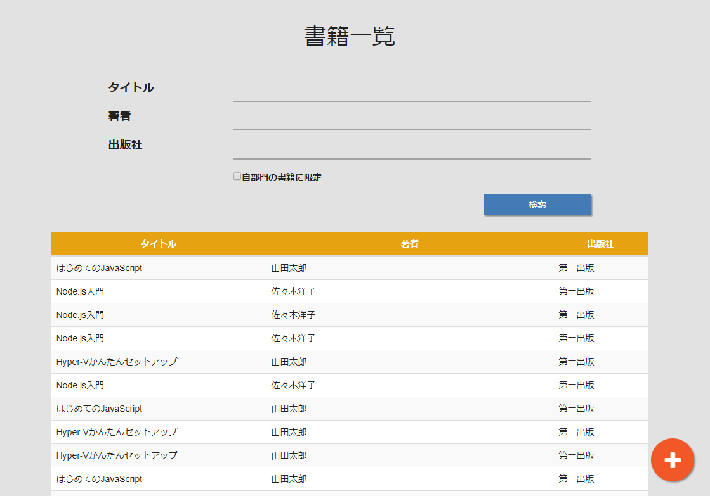

書籍一覧画面
概要
登録している書籍の一覧を表示する。
また、検索条件を入力して検索を行う。
画面イメージ

画面項目
ヘッダー部
ヘッダー部には検索に関する項目を表示する
| 項目名 | タイプ | 取得元/保存先 | 備考 |
|---|---|---|---|
| タイトル | テキスト | - | - |
| 著者 | テキスト | - | - |
| 出版社 | テキスト | - | - |
| 自部門の書籍に限定 | チェックボックス | - | - |
| 検索 | ボタン | - | - |
明細部
明細部には検索条件に合致した書籍の情報を表示する。
| 項目名 | タイプ | 取得元/保存先 | 備考 |
|---|---|---|---|
| タイトル | ラベル | 書籍一覧API.タイトル | - |
| 著者 | ラベル | 書籍一覧API.著者 | - |
| 出版社 | ラベル | 書籍一覧API.出版社 | - |
アクション
初期表示時
- 書籍一覧APIを呼び出し、全件のデータを取得する。
- 取得したデータを画面に表示する。
検索ボタン押下時
- 入力された検索条件を用いて書籍一覧APIを呼び出す。
- 取得したデータを画面に表示する。
- 【検索結果が0件の場合】
- リストを表示せず、代わりに「検索結果は0件です」を表示する。
追加ボタン押下時
- 書籍登録画面に遷移する
検索結果の行選択時
- 書籍詳細画面に遷移する